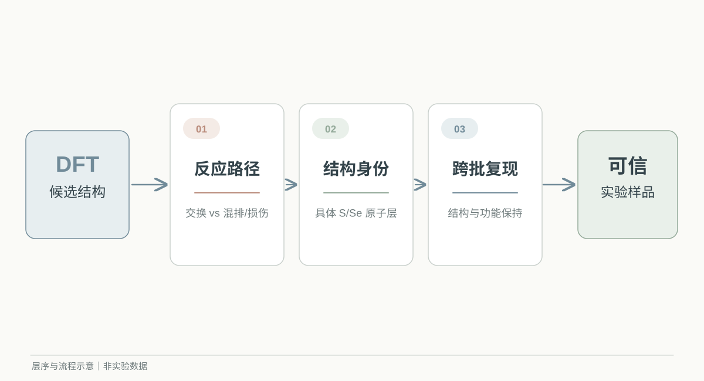
核心科学问题
如何把“局部稳定的理论结构”转化为“层序可信的功能样品”？
五层 Janus 材料尤其要回答：S/Se 是否位于指定原子层，而不只是总体配比接近目标。
AI4S · 二维材料 · 研究计划
AI 辅助五层 Janus In₂S₂Se 的
合成与光伏验证
研究背景 → 体系选择 → 研究路径 → 研究目标
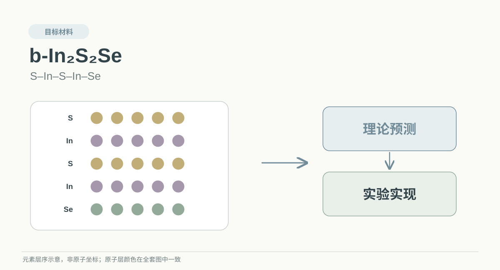
01 / 研究背景

核心科学问题
如何把“局部稳定的理论结构”转化为“层序可信的功能样品”？
五层 Janus 材料尤其要回答：S/Se 是否位于指定原子层，而不只是总体配比接近目标。
01 / 研究背景
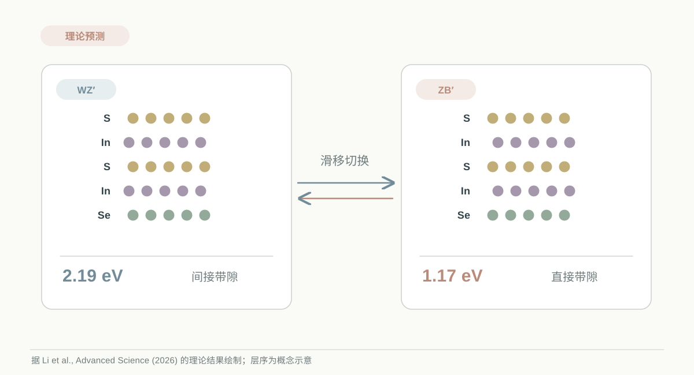
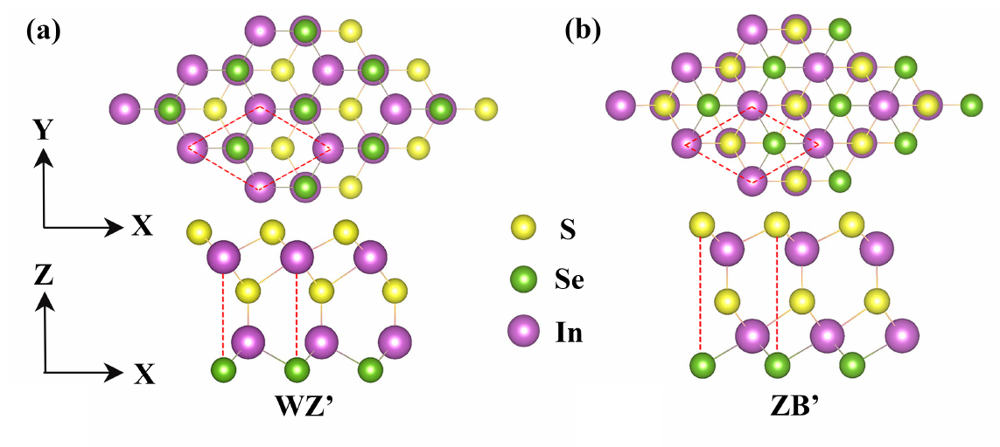
右图与带隙均为理论结果；原论文光电流计算含外加偏压。
02 / 体系选择
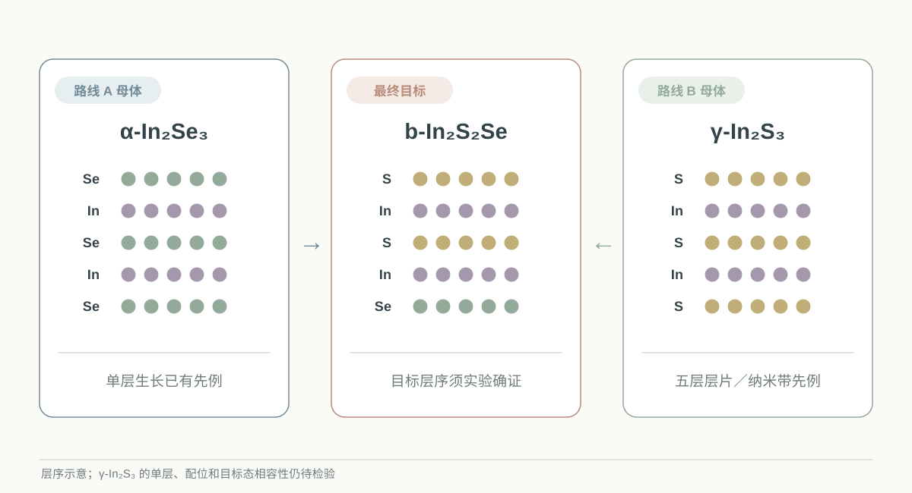
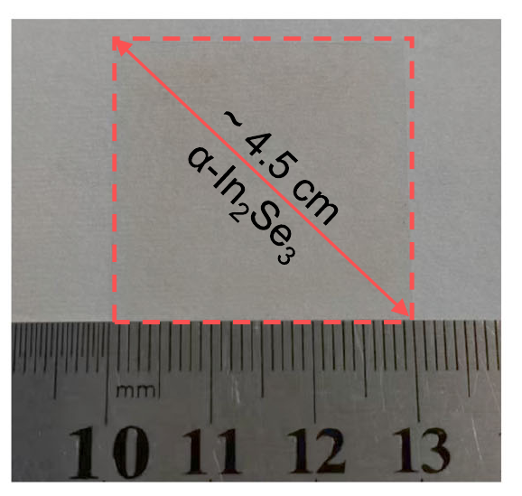
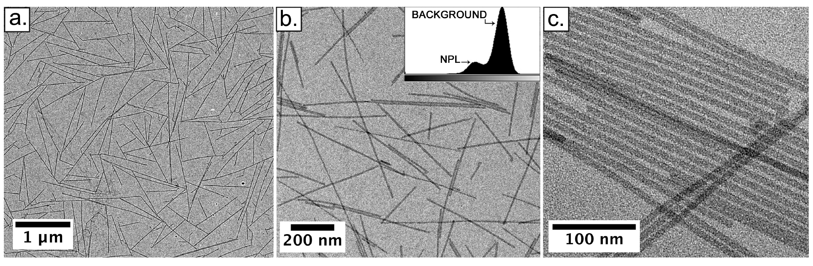
03 / 研究路径
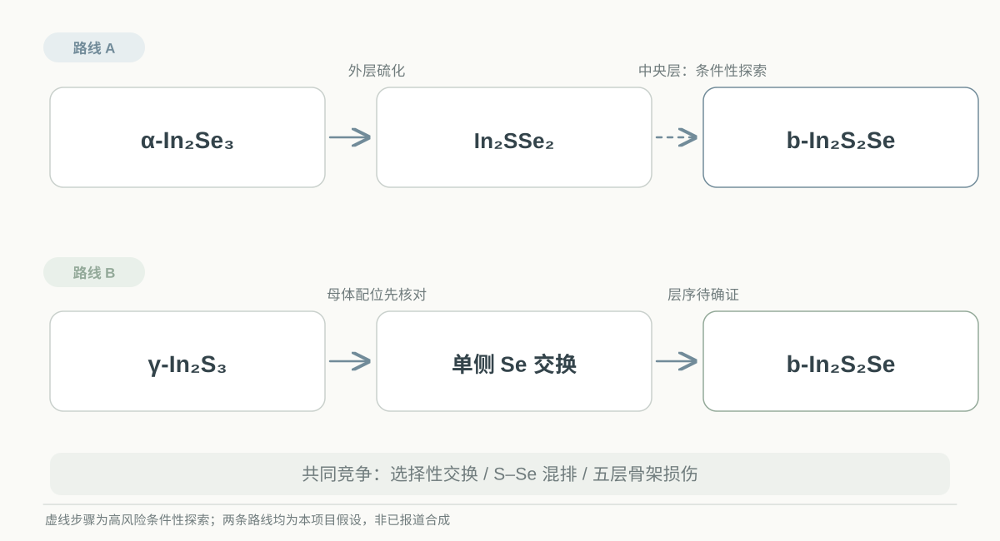
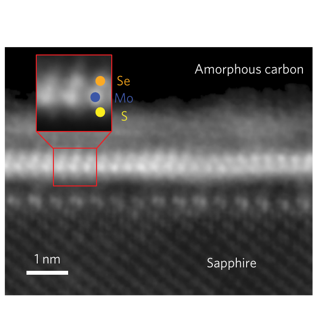
图中为 MoSSe，并非 In₂S₂Se；只能借鉴位点选择性思路。
03 / 研究路径
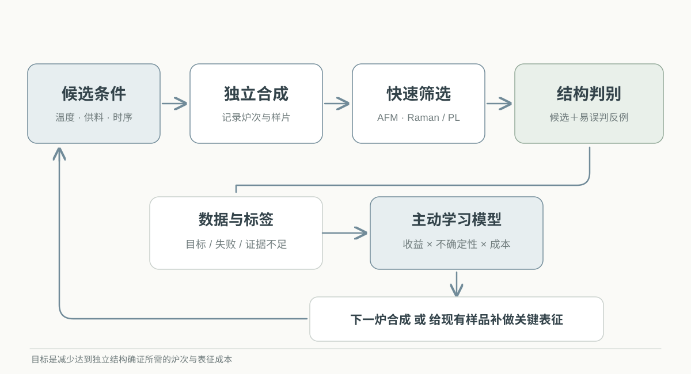
AI 决策对象
下一炉参数，或对现有样品补做一次最有信息量的测量。
保留失败与“证据不足”，按独立炉次比较策略效率，而非只追求 Raman/PL 峰值。
03 / 研究路径
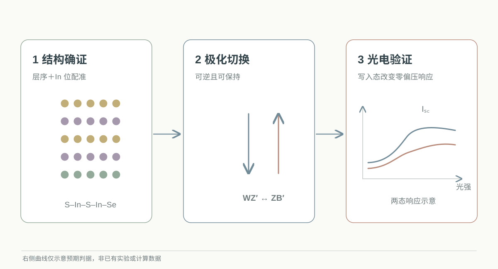
证据顺序
图中曲线是判据示意，不是已获得的数据。
04 / 研究目标
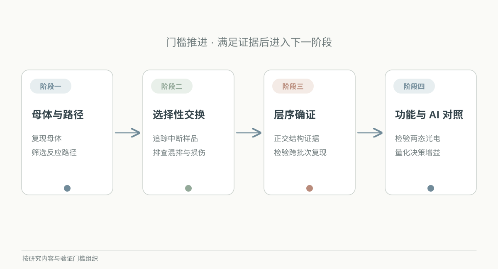
前一阶段的结构证据成立，才进入下一阶段的功能判断。
04 / 研究目标
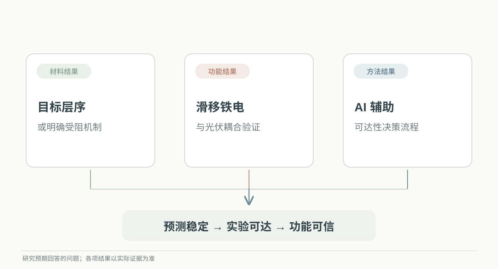
材料、功能和方法三类证据，共同缩小二维材料理论与实验之间的距离。